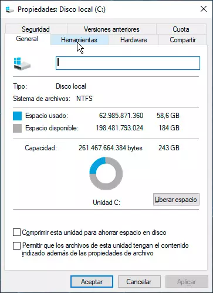
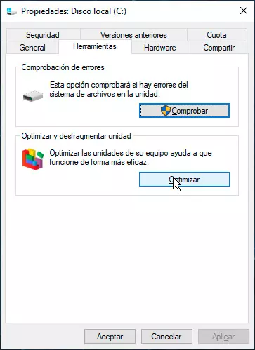
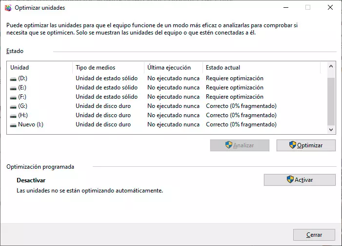
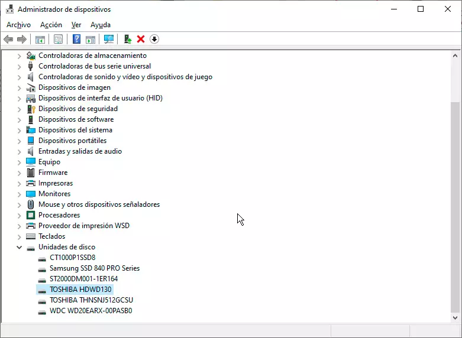
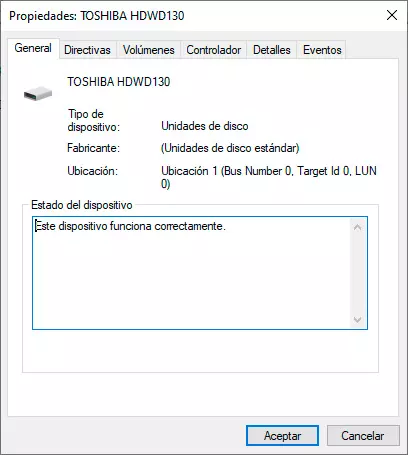
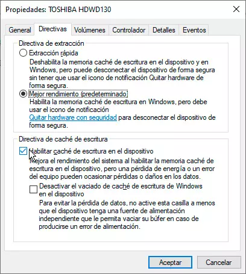

Discos duros
No deja de ser verdad que los discos duros, como opción de almacenamiento, no son ya de por sí los más rápidos. Igualmente puede pasar que por alguna razon u otra estos discos vayan mas lento de lo usual.
Optimizar unidades
Una de las opciones más rápidas para mejorar el rendimiento de nuestro disco duro. Es usar la aplicación de Optimizar unidades. Esta aplicación antiguamente correspondía al Desfragmentador de disco duro. Porque esto es lo que hace esta opción: analiza el grado de fragmentación de nuestros discos duros y, si es elevado, procede a desfragmentarlos.
Para abrir esta herramienta, el sistema más sencillo es hacer doble clic en Este equipo y hacer clic derecho en la unidad que queremos conocer su estado. En el menú desplegable seleccionaremos la opción Propiedades.

Ahora seleccionaremos la pestaña Herramientas.

Y, en ella, opción de Optimizar y desfragmentar unidad. Lo cual nos trasladará a esta pantalla.

Aquí podremos dejar que el sistema operativo haga su trabajo y que «optimice» las unidades: en el caso de los discos duros mecánicos desfragmentará los archivos (a veces los archivos pueden estar ocupando partes separadas en el disco), y en el caso de los SSD los optimizará aplicando las tareas de garbage collection entre otras, así que no tengáis miedo de ejecutar estas tareas de forma periódica porque solo harán bien a tu sistema.
Activar la caché de escritura
La caché de escritura del disco duro es un chip de memoria NAND Flash que se incluye en nuestro disco duro. En ella se almacenan los datos antes de grabarse físicamente en uno de los platos de la unidad. Por tanto, tenerla activada siempre va a suponer un boost al rendimiento de nuestro disco.
Para comprobar si la tenemos activada o no, deberemos de hacerlo a través del Administrador de dispositivos. Para abrirlo, no tenéis más que teclear en el icono de la lupa de vuestra barra de tareas "Administrador de dispositivos".
Ahora seleccionaremos la opción de Unidades de disco. Para luego, hacer doble clic sobre nuestra unidad de almacenamiento.

Esto abrirá la siguiente ventana:

Ahora iremos a la pestaña Directivas.

Es en esta pestaña donde comprobaremos si tenemos activada la caché de escritura del disco duro. En caso de tenerla desactivada, deberéis de proceder a su activación.